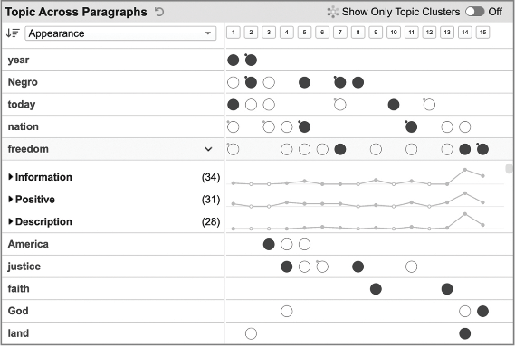

History and background
The following is excerpted from:
Brown, D. W. & Zawodny Wetzel, D. (2023). Corpora and Rhetorically Informed Text Analysis: The diverse applications of DocuScope. John Benjamins Publishing Company. https://doi.org/10.1075/scl.109
You can copy the citation in APA format:
Kaufer, D. & Ishizaki, S. (2023). The DocuScope project: History, theory and future directions. In D. W. Brown & D. Zawodny Wetzel (Ed.), Corpora and Rhetorically Informed Text Analysis: The diverse applications of DocuScope (pp. 2-24). John Benjamins Publishing Company. https://doi.org/10.1075/scl.109.01kauOr in BibTex format:
@incollection{kaufer2023docuscope,
title={The DocuScope project: History, theory and future directions},
author={Kaufer, David and Ishizaki, Suguru},
booktitle={Corpora and Rhetorically Informed Text Analysis: The diverse applications of DocuScope},
editor={Brown, David West and Leech, Geoffrey and Zawodny Wetzel, Danielle},
pages={2--24},
year={2023},
publisher={John Benjamins Publishing Company},
doi = {doi:10.1075/scl.109.01kau}
}Overview of “The DocuScope Project”
By David Kaufer and Suguru Ishizaki
I. Origins: Theoretical Gaps in Rhetorical Tradition
Problem Addressed
- Traditional rhetoric separates invention (what to say) from style (how to say it).
- This divide left unanswered: How do thoughts become concrete language?
DocuScope’s Starting Point
- Aimed to unify invention and style through identifying rhetorical language patterns.
- Initial study: Lincoln–Douglas debates, focusing on registers (e.g., personal vs. political speech styles).
III. DocuScope: Building the Tool
What is DocuScope?
- A software environment and dictionary that classifies word sequences by rhetorical function.
Features
- Interactive tagging & visualization
- Dictionary includes 3–5 word sequences
- Human-curated with computational scalability
Curation Process
- Inductive: Built from real texts across genres
- Ongoing: Regularly updated
- Designed to capture rhetorical impressions like:
- Confidence
- Description
- Facilitation
- Narrative structure
IV. Key Taxonomies: DocuScope’s Conceptual Framework
Three Rhetorical Continua
| Continuum | Description |
|---|---|
| Interiority ↔︎ Externality | From inner mental states to public/social discourse |
| Stories ↔︎ Information | From narrative sequence to hierarchical explanation |
| Monologic ↔︎ Dialogic | From speaker-focused to audience-aware language |
Sample Rhetorical Categories (Crossing Continua)
- Narrative – Story-driven, may be interior, often dialogic
- Academic – External, informational, often monologic
- Facilitate – Dialogic, supportive, often interior
- First Person – Subjective and narrative
- Positive / Negative – Affect-based, shaping emotional tone
V. Dealing with Polysemy: Challenges in Classification
DocuScope addresses polysemy—contextual shifts in meaning—by managing four main types:
1. Small Variation
- Minor lexical changes can flip meaning.
- e.g., “swearing at” vs. “swearing to”
2. Pattern Length
- Length impacts meaning.
- e.g., “they know what they are doing” = confidence
“they doubt they know what they are doing” = uncertainty
- e.g., “they know what they are doing” = confidence
3. Variation Around a Stable Theme
- Multiple expressions of the same idea (e.g., “surprised face”, “edge of your seat”).
- Reflects stylistic copiousness from classical rhetoric.
4. Assigning Salience
- Choosing the focal word in a phrase.
- e.g., “collapsed wall” — is it about collapse or the wall?
VI. Applications: From Corpus Analysis to Student Writing
Early Use
- Classified genres in corpora like the Brown Corpus.
Broader Applications
- Used by:
- Literary researchers (e.g., Shakespeare studies)
- Policy analysts (RAND)
- Educational researchers (ETS)
Educational Shift
- Led to tools for single-text analysis, including:
- DocuScope Write & Audit
- Supports student writing and instructor feedback
VII. Recent Development: Integrating Topic Structure
Challenge
- Traditional methods poorly suited for analyzing single texts (e.g., student papers).
Solution: OnTopic
- A visualization tool that tracks how topics evolve across sentences and paragraphs.
- Inspired by Functional Sentence Perspective (FSP) and Systemic Functional Linguistics (SFL).
Integration with DocuScope
- Helps users:
- Focus on local rhetorical effects
- See how DocuScope patterns align with key topics
Example: MLK’s “I Have a Dream” Speech
- Topic: “freedom”
- Patterns: “positive” and “description”
- Observation: Spike in paragraph 14 (8x repetition of “let freedom ring”)
VIII. Conclusion: Maturation of the DocuScope Project
Trajectory
- From educational prototype → research platform → integrated educational/research tool
Key Concepts
- Collisions (overlapping classifications):
- Once seen as errors
- Now seen as opportunities for refinement and innovation
Vision of Maturity
- DocuScope aims to be a shared public resource for:
- Rhetorical/textual analysis
- Writing pedagogy
- Ongoing research in rhetorical production
DocuScope makes visible the rhetorical decisions writers make, offering a practical, scalable link between thought and expression.
The DocuScope project: History, theory and future directions
David Kaufer & Suguru Ishizaki
Carnegie Mellon University
This chapter overviews the history of the DocuScope project. In its inception, we sought a production theory underlying rhetorical composition and decision-making. Our pursuit of a theory led to the development of large-scale dictionaries of language patterns we have curated for over two decades. The major conceptual continua that have guided our curation efforts and major taxonomies are discussed, including the four types of polysemy we have had to address to ensure our dictionary patterns are as ambiguity-free as possible. We conclude by reviewing our recent efforts to apply the dictionaries for writing education on small textual samples, including single texts.
Keywords: rhetoric as design, comparative genre, computational rhetoric, rhetorical polysemy, writing education, coherence, impressions
1. Historical and theoretical challenge: Understanding rhetorical language production
The DocuScope project began as a response to theoretical gaps in the history of the rhetorical tradition. From its roots in western antiquity, rhetoricians have been the language experts seeking to understand how the pragmatic uses of language fashions experiences for other minds – experiences ranging from the novelist’s mise-en-scène (e.g., “the servant paged through a hardbound first edition of Harry Potter on a chocolate swivel chair under a halogen light”) to the invocation of abstractions like publics (“We the people”) and the norms regulating them. Rhetoricians as analysts or educators theorize about “production” knowledge, specifically the knowledge that underlies how culturally-situated speakers and writers manage to refine (or fail to refine) their thoughts into adaptive, timely, effective, and sometimes even inventive expression.
According to rhetorical historian George Kennedy (1963), the rhetorical tradition from classical Greece offered three paths for explaining how production knowledge is acquired and honed. The first path was natural talent or genius, which rhetorical pedagogues acknowledged but did not focus on further. The second path was through a system of “topics” or “topical schemes”, an inventory of abstract categories a speaker could run through as a checklist when contextualizing arguments (syllogisms and enthymemes) for particular situations. Topics could be general to all situations of rhetoric or specialized to particular occasions. For example, for policy speakers of his day, Aristotle [1359b] proposed five topics to consider for relevance: “ways and means, war and peace, national defence, imports and exports, and legislation”. He goes on to elaborate what policy speakers should be prepared to know under each of these topics. Through their very abstractness, topical systems were designed to be comprehensive, helping the student “discover the means of coming as near such success as the circumstances of each particular case allow” [1355b]. However, topics remained practically silent on how a speaker’s narrowing in on one or another topical choice materialized into linguistic choice. In Aristotle’s compartmentalized way of thinking, linguistic choices belonged to a separate art translated as “style”, which Aristotle addressed in a different part of his Rhetoric. Style was relegated to not “what” was said but with “saying it the right way” [1404a]. Language and language variation are distanced from invention and content. Roman rhetoricians from Cicero to Quintilian institutionalized Aristotle’s compartmentalization by making invention and style separate and non-interactive “canons” of rhetoric (Kennedy, 1972/2008).
The third path classical rhetoric offered for developing production knowledge, according to Kennedy (1963), was imitation, the close study of the language of specific orators and authors, not only to mimic their craft but to extend it, to generalize from it, and, in the ideal, to learn over time to appropriate it into a craft of one’s own. Through their very concreteness, imitative models afforded a rich fish-eye view of linguistic variation from a specific sample of speakers and writers. Yet imitative models are challenged on issues of representativeness and generalizability. How representative of rhetorical situations was the language being studied for imitation versus all the imitation-worthy language left unexamined? And what in any case ensures that imitation can generalize from “servile copying” (Gruber, 1977) to creativity? If topical systems fell short of anchoring thought in language, imitative models provide no guarantee that the imitator is able to extract the higher-level decision-making that creative imitation sought to uncover.
In the mid-1990s, Kaufer and his colleagues began to postulate that adequate theoretical accounts of a speaker or writer’s production knowledge required transparent and bi-directional pathways from thought to expression, and this meant, from the point of view of the rhetorical tradition, a principled merger of the heretofore siloed canons of invention and style. Kaufer and Butler sought a beachhead for this theoretical merger in the Lincoln/Douglas debates (1996). During those debates, Lincoln and Douglas harbor competing rhetorical strategies to support their versions of the American future (an America with Slavery in the case of Douglas; an America without it in the case of Lincoln). Kaufer and Butler found that those competing strategies get implemented in the language of each of their speeches during the debates. They found that each debater’s language often served a variety of affirmative and negative inventional functions characteristic of debate. Some of their language, for example, was designed affirmatively to advance the speaker’s strategy; some was designed to block the opponent’s strategy; some was designed to fend off the opponent’s attacks; and some was designed to double-down on the attack when the opponent’s defense had proven porous.
In addition to classifying the debaters’ language and its inventional relevance for debate, Kaufer and Butler found that Lincoln and Douglas relied on inventional strategies involving register. Strategies of this type invoke contexts, which in turn invoke premises, inferences, role identities, and role-appropriate ways of speaking that political debaters can use for legitimation and delegitimation. Douglas in particular tried to entrap Lincoln in a political loyalty register. In the first debate at Ottawa, Douglas hammered home that the Republicans were the new party demanding immediate abolition and Lincoln, as a Republican stalwart, had to be committed to that same (then unpopular in Southern Illinois) platform. In the second debate at Freeport, Lincoln escaped the trap by shifting register and declaring that, though a Republican, he did not agree with his Republican colleagues who demanded the immediate elimination of slavery. Lincoln dodged Douglas’ attack by invoking a register of personal conscience, a register that did not require him to hew to every talking point of the most vocal members of his party. Beyond the tension between party loyalist and personal conscience registers, Kaufer and Butler found tensions between political and personal registers in the debates, between talking as an ideologue and talking as a human being. For example, in the Ottawa debate, after launching a scathing political attack that Lincoln had conspired to “dissolve and kill the old Whig party,” and turn the Whigs into an “Abolition party”, Douglas abruptly shifted gears into a personal/autobiographical register of praise for Lincoln as a “gentleman”: “I mean nothing personally disrespectful or unkind to that gentleman. I have known him for nearly twenty-five years. There were many points of sympathy between us when we first got acquainted.” Douglas continues in this personal register for a few more sentences to show that whatever his differences with Lincoln, they were not personal. Making sense of Douglas’ sudden swivel from an ideological to a personal register requires understanding that by delving into a seemingly friendly register (establishing Lincoln the likeable human being), Douglas was in fact seeking to bolster the credibility of his political register (Lincoln the wrong-headed politician). He needed a personal/autobiographical register to show that his political stance had been scoured clean of personal animus.
Studying these debates gave Kaufer and Butler (2000) a method for tracking the coordination of inventional strategies and registers with concrete utterances. They went on to scale this tracking method to written genres and to see if they could build a pedagogy indicating how genre variation grew out of systematic variations in composing decisions. Kaufer and Butler (2000) observed that standard pedagogies of language and writing acknowledged the importance of the grammatical relations (words, phrases, clauses) that hold a sentence together (Hopper, 1999), of the coherence relations (Vande Kopple, 1989) across sentences that hold a paragraph together, and the situational constraints that qualify multi-paragraph/multi-section language to be “fitting” (Bitzer, 1968) to its context and genre appropriate (Miller, 1984; Swales, 1990). They argued that a middle layer between grammar and genre that connects invention to the performative sequencing of visible or audible language was largely unexplored. For instance, the sequence “I often used to” violates grammatical phrase boundaries and doesn’t exist as a grammatical unit. Yet it is a vital production unit or as Chafe called it a “intonation unit” (Chafe, 1994), a unit dependent on the limitations of real-time language production. English affords countless variations on this sequence to produce a first-person autobiographical effect, an effect invoking the continuous past of the author or a character (real or imagined) the author is referencing from a first-person vantage. This class of sequences, accumulating in a very large number of options owing to the combinatorics, supports a variety of genres (personal, literary, argumentative) where writers have the latitude to throw autobiographical elements into the mix.
The scope of this observation extends beyond autobiography. Language is rife with non-grammatical (and grammatical) sequences that constitute performative phrasing or what we came simply to refer to as composing patterns. The presence or absence of these patterns in a given text determines whether the text is designed (and perceived) as autobiographical or descriptive; whether it creates a linear flow of temporal events meant (and designed to be processed) as story; or hierarchies of concepts meant (and understood) as an information repository; whether it conveys positive or negative sentiment or a perceived infusion of both; whether it is meant (experienced as) subjective or objective, disclosive, facilitative, proscriptive, prescriptive, confident, hedged, cautionary, optimistic, reluctant or resistant; and whether it comes with a register “sounding” academic, public, personal, or even intimate.
Kaufer and Butler (2000) merely peeked into this hidden reservoir of composing patterns as evidence for the book’s larger argument that systematic variations across composing patterns supports the diversity of English written genres. But it was well beyond the scope of that single pedagogical project to turn that postulated reservoir of patterns into a repository that could be tested on actual linguistic data. Creating that repository required constructing a large dictionary of composing patterns.
At this juncture, in 1998, we (Kaufer and Ishizaki) began to collaborate on the challenge of developing a theory of rhetorical production with a dictionary of composing patterns tied to invention to support it. We knew such a dictionary could not be curated for scalability without significant computational support. We designed an interactive tagging, visualization, and authoring environment, now known as DocuScope, for classifying language patterns (e.g., “I often used to” and its variations) according to the (designed) reader experience they align with. We developed a suite of automated tools to help keep the dictionary well-organized even as it scaled to millions of patterns.
Classifying phrases with rhetorical categories requires human interpretation, but we thought of it as “light” interpretation – interpretation that stays close to uncontested cultural understandings (and tagged as contested when composing patterns were interpretatively contested). The DocuScope dictionary was designed to include word sequences of any length, but the majority of sequences are between three and five words. The dictionary can be used to tag individual texts or textual corpora. The current dictionary has been constructed over decades using a digital authoring tool. On a near daily basis, we have added new composing patterns to the dictionary, culled from corpus study but also from reading and listening in face-to-face and mediated contexts. As we add composing patterns to the dictionary, we classify them for rhetorical function and inventional likelihood. The process has been inductive and based on the simple principle that the more patterns that are added to the dictionary from the largest variation of texts, genres, and contexts, the more accurate the dictionary (applied as an automatic tagger) will be in tagging texts not yet inspected.
It initially took three years of iterating over thousands of words extracted from corpus study and close everyday reading/listening to produce a taxonomy that could statistically classify the fifteen genres of the Brown Corpus of Written American English and the Freiburg-Brown Corpus of Written English about as well as the human classifiers who originally built it (Collins, 2003). The promise of this study led us to publish Kaufer, Ishizaki, Collins, and Butler (2004), which presented a snapshot of our compendium of rhetorically categorized language. The dictionary presented in that book covered English with statistical robustness but was still proportionally small. It contained only 13,000 individual words and many more sequences of two to six words. This led us to manually work through the 100,000 most frequent words (A-Z) of English, along with idioms in which they participate, to understand how they fit into our existing classification system and how our system required further refinement at the margins to account for the various subtle pragmatic variations that fell in the cracks of our original formulation.
Over the years, we have experimented with the DocuScope dictionary in support of published research in rhetorical corpus analysis (e.g., Kaufer & Hariman, 2009; Al-Malki et al., 2012). During these years of experimentation (which continue to the present day), we have taken many steps to extend the dictionary’s utility as a corpus and educational tool. The steps taken between 2004 and 2011 are detailed in Ishizaki & Kaufer (2011). The DocuScope repository developed from 2003–2014 became grist for researchers beyond rhetoric proper, by Shakespearean researchers (Hope & Witmore, 2004, 2010), researchers at the Stanford Literary Lab (Allison, Heuser, Jockers, Moretti, & Witmore, 2011), the Rand Corporation, where the repository were incorporated into a Rand in-house tool for analysts (Marcellino, 2020), and the Educational Testing Service where researchers used the repository to devise new methods for measuring validity in argument writing (Beigman Klebanov et al., 2020).
The DocuScope dictionary has greatly expanded and refined from 2014 to the present but the overall organizing frame has remained pretty much intact. That frame crosses three primary continua.
- Interiority/Externality. Ranges from language seeking to capture mental interiority/individuality/idiosyncrasy to language about an external public world.
- Stories/Information. Ranges from language presenting as “story” (temporal organization) to “information” (hierarchical organization).
- Monologic/Dialogic. Ranges from language where the receiver is offstage and unacknowledged to onstage and acknowledged.
Table 1 briefly describes the overarching DocuScope categories as of February 2022, the areas on the various continua they support if not outright favor, and the various managed impressions they help create for a text. Column 1 of the table indicates the dictionary category. Column 2 offers a brief description of the category. Column 3 indicates where the category typically lies on the three continua. Poles of each continuum associated with the category are in bold type. Notice that it is not uncommon for a category to span both poles of a continuum.
Table 1. An overview of the central categories of the DocuScope dictionary as of February, 2022
| Category | Description | Type 1 | Type 2 | Type 3 |
|---|---|---|---|---|
| Academic | This category captures the impression of a text that was years of specialized preparation in the making. Infrequent in popular culture but frequent in specialized cultures. | Interior / Exterior | Story / Information | Monologic / Dialogics |
| Character | This category captures the impression of a text featuring a human or sentient experience as subject or theme. Expected in a feature article but not a mechanical engineering report. | Interior / Exterior | Story / Information | Monologic / Dialogics |
| Citation | This category captures the Bahktinian text, patches of prior external voices laying a foundation for the indigenous authorial voice enduring to the end. | Interior / Exterior | Story / Information | Monologic / Dialogics |
| Confidence | This category captures the impression of efforts to sort statements for degrees of certitude, from low, hedged, to high confidence. Essential for setting up complex stories and information. | Interior / Exterior | Story / Information | Monologic / Dialogics |
| Contingency | This category captures the texture, intrigue, and nuance promised by knowing not only what is true but what could be true given additional conditions falling into place. Common to story and information. | Interior / Exterior | Story / Information | Monologic / Dialogics |
| Description | This category captures the sensory language that activates the receiver’s memory of objects as they are touched and tasted, and objects and scenes as they are smelled, seen, and heard. | Interior / Exterior | Story / Information | Monologic / Dialogics |
| Facilitate | This category captures the idea of facilitation through words like “motivating”, “mentoring”, “tutoring”, “counseling”; ubiquitous in education, counseling and seminars focused on growth and empowerment. | Interior / Exterior | Story / Information | Monologic / Dialogics |
| Force-Stressed | This category captures language calling attention to itself through intensification or puffery; a personality (cliched or original) seeps through that either adds to or distracts from information or story. | Interior / Exterior | Story / Information | Monologic / Dialogics |
| First Person | This category captures the author and characters cited or quoted through the peephole of self-reference. Though ubiquitous, self-reference is less welcome in formal science reporting should it turn subjective. | Interior / Exterior | Story / Information | Monologic / Dialogics |
| Future | This category captures future time as a pliable resource for depiction, argumentation, policy analysis, forecasting, activism, fatalism, hopes/promises, fears/threats. | Interior / Exterior | Story / Information | Monologic / Dialogics |
| Information | This category captures the impression of a text as a hierarchical repository, a container that can feel sparsely or tightly “packed” with a vague mass quantity we refer to as “content” or “information”. | Interior / Exterior | Story / Information | Monologic / Dialogics |
| Inquiry | This category captures the language of curiosity, experimentation, investigation, wonder; a staple of popular science writing and learner-focused education. | Interior / Exterior | Story / Information | Monologic / Dialogics |
| Interactivity | This category captures the impression of a text hosting two-way communication, either between the author and audience, or between characters introduced in the text. | Interior / Exterior | Story / Information | Monologic / Dialogics |
| Metadiscourse | This category captures the impression of a speaker or writer not only providing a message, but opening up a second channel to help receivers navigate through it. | Interior / Exterior | Story / Information | Monologic / Dialogics |
| Narrative | This category captures the impression of a text organized by time and flowing from one event to the next. Some events may be blown up into scenes (description) but that is not a requirement. | Interior / Exterior | Story / Information | Monologic / Dialogics |
| Negative | This category captures the discontent (and gaps) needed for problem-oriented communication. But it is ubiquitous beyond those contexts. Much humor riffs on everyday negativity. | Interior / Exterior | Story / Information | Monologic / Dialogics |
| Positive | This category captures the language typically used at happy and celebratory occasions. But it is ubiquitous beyond such occasions, offering restoration, comic relief, and silver linings to negativity’s regret. | Interior / Exterior | Story / Information | Monologic / Dialogics |
| Public Terms | This category captures the impression that the content under consideration holds a public trust with accountabilities that don’t apply in the interactions between private individuals. | Interior / Exterior | Story / Information | Monologic / Dialogics |
| Reasoning | This category captures the impression of a mind in pursuit of truth and consensus by guiding another mind from premise to conclusion, claim to evidence, problem to solution. | Interior / Exterior | Story / Information | Monologic / Dialogics |
| Responsibility | We can be praised or blamed because we are responsible. This category captures both sides of being responsible. | Interior / Exterior | Story / Information | Monologic / Dialogics |
| Strategic | This category captures the idea that individuals with common vision and goals can form collectives to pursue mutual interests through tactical and logistical actions. | Interior / Exterior | Story / Information | Monologic / Dialogics |
| Uncertainty | This category captures the impression of the unknown, from the small to the monumental. We don’t put confidence estimates on the unknown, which distinguishes confidence from uncertainty. | Interior / Exterior | Story / Information | Monologic / Dialogics |
| Updates | This category captures the impression of texts as moving windows on the world that update as the world they monitor changes. | Interior / Exterior | Story / Information | Monologic / Dialogics |
2. Dictionary curation: Addressing the challenges of polysemy
Our efforts to develop and continuously refine a theory of rhetorical language production have proceeded hand in hand with improving the empirical performance of the DocuScope dictionary. The many students and external researchers the dictionary has supported offers some measure of empirical validation that a hidden middle layer – a rhetorical production layer – that Kaufer and Butler first identified does seem to exist and that it offers some explanatory power in identifying the rhetorical choices underlying a text. It is worth noting, however, that we see the dictionary as an approximation, not a strict implementation, of the theory. The dictionary is not perfect nor will it ever be. This is not only because of the size of the composing patterns needed to cover English but because of the context-dependence of the patterns that pose significant challenges for human curation.
Polysemous (Ceccarelli, 1998) properties of composing patterns have particularly made their curation within rhetorical categories challenging. By polysemous, we mean the tendency of word meanings to adapt in the direction of the words neighboring them and the external contexts mediating them. Polysemy is an umbrella term. We now turn to four specific types of polysemy that we have discovered and have learned to accommodate in our curation efforts.
- the polysemy of small variation
- the polysemy of varying pattern length
- the polysemy of variation around a stable meaning or theme
- the polysemy inherent in assigning salience to a pattern
The polysemy of small variation means that a slight change in a pattern can cause significant change in its classification as an inventional resource. Consider the inventional consequences of changing the preposition from swearing at someone to swearing by them to swearing to them. “Smearing a cream” and “smearing a politician” are identical grammatical patterns with respect to both grammatical form and function. Yet one is a motion and the other a slander. The polysemy of small variation has taught us that grammatical similarity and lexical overlap are not reliable signals of inventional potential.
The polysemy of varying pattern length means that our classification of a pattern can dramatically change simply by stretching or shrinking it even slightly. A well-known case is fronting a pattern with negation. The English word “surprise” is conventionally defined as an “unusual or unexpected event”, a story twist not (fully) anticipated, something that can leave an audience “surprised”, “astounded”, “astonished” and a British audience “gobsmacked.” But fronting with a negative (“no surprise”) brings major changes in inventional potential. It means that the event could be predicted but more importantly that its present predictability reinforces a confident history of past predictions. If it’s “no surprise” that Joe cleaned the plate of ice cream today, it is because he does so on most any day when the opportunity presents itself. Our curation efforts require close attention to negative patterns on the left.
Lengthening on the right has certain predictable properties we have tried to accommodate. Longer patterns are rarer and soak up more context than shorter ones. As a result, from the start of the DocuScope project, we engineered DocuScope’s parser to match the longest pattern available in its dictionary (Ishizaki & Kaufer, 2011). Consider the 8-word sequence “they doubt they know what they are doing”. The DocuScope dictionary classifies this sequence as an expression of uncertainty. But it classifies its 6-word subsequence “they know what they are doing” as confidence. Faced with the 8-word sequence beginning with “they doubt…”, the DocuScope would thus ignore the 6-word match and match the 8-word, which is more contextually accurate (Ishizaki & Kaufer, 2011).
The polysemy of variation around a stable meaning or theme captures the key idea in Erasmus’ (1512/1978) 1512 best-selling Copia: Foundations of the Abundant Style. Erasmus treated this type of polysemy (the ability to say essentially the same thing in dozens of different ways) as a feature not a bug of invention. The idea of stylistic copiousness/abundance explains how rhetorical artists can take a meaning or theme and slice it razor thin, each slice with its own unique take. Let us return to “surprise” as a theme to vary. Novelists convey “surprise” in the description of facial expressions. There are “looks of surprise” and “surprised looks”, and “surprised faces”. As an attribute of the face, “surprise” activates synonyms like “agape”, “open-mouthed”, “dumbstruck”, “wide-eyed” and “their jaws dropped”. “Surprise” activates still other pragmatic word families when we shift from a single reaction in time or space to an ongoing state where an audience member has been trained to expect the unexpected. Here “surprise” activates concepts associated with suspense: “suspenseful”, “cliffhanger”, “gripping”, “squeaker”, “edge of the seat”. Should the revealed surprise induce a powerful negative reaction, a whole new class of synonyms activate: “startling”, “kicker” and (if the perceiver is unusually blind-sided) “shocking”, “rude awakening”, “without warning”, and “didn’t see it coming”. Notice that, across all these patterns, the core meaning of “surprise” has not been overturned. But each variation captures a modification that merits distinct inventional credit. This means “dumbstruck” attaches descriptively to a surprised face while “edge of the seat” captures narrative suspense. The polysemy of stylistic abundance, which we take seriously in our curation efforts, entails that, for the rhetorical artist, words are not primitives but divisible “shadings” with adjustable lenses and framings. It is this form of polysemy that marries our theory of invention to the ancient understanding of style (“how you say it”).
The polysemy of assigning salience deals with the fact that in multi-word patterns the question arises as to which word(s) gets the focus (salience) and which are there at the periphery to support the focus. For noun phrases, our simple rule of thumb has been “all things equal, trust that the head noun carries the salience.” The application of this rule means that in phrases like “blue wall”, “wall” carries the salience. Color would seem the more incidental (i.e. non-salient) element in most circulation paths of this string. However, the head noun rule can be overridden in many contexts. Take the phrase “collapsed wall”. Is it serving the inventional aims of discussing a wall (descriptive) or a collapse (negative)? In cases like this, we assess that the head noun rule needs to be overridden because “collapsed” is a much rarer (and thus information-rich and so salient) element in the context. The easiest decisions arise when the modifier and the head noun reinforce the salience of the other, making the salience of the phrase “resonant” (judged positively) or “redundant” (judged negatively). An example is “harrowing nightmare.” There’s little loss in salience whether this string gets classified as a “harrowing thing” or a type of “nightmare.” Both modifier and head contribute to the salient meaning of emotional fear.
The hardest categorization decisions arise when the salience from both ends seems of equal weight and tugging in opposite directions: “Instructive nightmare.” Suppose we have already classified “nightmarish things” as a source of emotional fear, a negative emotion. Suppose we have already classified “instructive things” as a positive value with potential cross-over to (positive) facilitation and even (positive) inquiry. “Instructive nightmare” defies all previous classifications. Cases of this variety inform us that our current classification system has failed to account for pragmatic sub-varieties in the language we had not anticipated. Even so-called bad things can have constructive sides. In cases such as these, we had to refine our system to accommodate the hybrid concept of a “constructive fear.”
We have seen how modifiers can override the salience of head nouns, but head nouns can also override the salience of modifiers. Take the modifier “breathtaking.” If you consult the one billion-word Corpus of Contemporary American English (COCA; Davies, 2008), you will find that “breathtaking” is a reliable indicator of positive/inspirational sights and experiences. The most frequent nouns modified are “view”, “beauty”, “speed”, “scenery”, “vistas”, “images”, and “places”. The word “breathtaking” (having one’s breath suspended) appears to have monopolized the conveyance of positive experience in English. The monopoly seems curious because as anyone who has had their wind knocked out, taken food down their windpipe, experienced anxiety, or suffered a heart attack well knows, the suspension of breath is anything but a positive experience. What the positive and negative side of losing breath share is a sense of awe, as Google’s on-line dictionary puts it, “a feeling of reverential respect mixed with fear or wonder.” Our breath commands reverence and that leaves space for a positive sublime side (of wonder/positive inquiry) when we note its absence in addition to the more conventional negative side (fear from the negative prospect of losing something necessary for survival).
Building the DocuScope dictionary for noun phrases has consisted of daily focused experiments in studying the dynamics of salience between modifiers and heads. Sometimes the head nouns control salience. Sometimes the modifiers. And in many cases, neither the modifier nor the head captures the salience exactly as a human reader would assign it. These latter cases require refining the dictionary substructure further and it is through these cases that the dictionary has systematically refined over the years, deepening in internal complexity within its original perimeters.
Our assignment of salience for word classes other than noun phrases is rooted in adjectives. Take the root adjective “inscrutable.” In DocuScope’s repository, it is classified under inquiry with a negative sentiment. The inquiry category includes curiosity and methodical efforts to satisfy it. These efforts are positive when knowledge is achieved, when the matter under investigation is proven “scrutable” (knowable). “Inscrutable” (the vastly more popular antonym – appearing 891 times in COCA (as of February 2022) compared to only 7 occurrences of “scrutable”) suggests that the comprehension required for knowledge has been blocked, imposing a shield of mystery or opacity on the matter under scrutiny. These considerations create an impression that the adjective “inscrutable” is a reliable writer’s resource for signaling limits on comprehension. But just how robust is that impression? To what extent does it depend on the grammatical form, function, and overall embedding of “inscrutable” (and cognates) within a sentence in addition to the contextual motivations a writer or speaker may be seeking to satisfy by circulating it? And how does this impression, even if robust, differ from similar impressions designed to convey limited or obstructed comprehension?
To try to answer these questions, we routinely run adjectives like “inscrutable” through a battery of patterns (Table 2) to uncover collisions (now also understood as potential “anomalies”) with our initial classification as a way of stress testing and refining further that classification. As Table 2 indicates, beyond the root adjective, we use corpus data to explore the adverbs that can modify the adjective (e.g. “emotionally inscrutable”), that frame it as an adjective predicated before a BE verb (e.g., “be inscrutable”), that nominalize it (e.g. “inscrutability”), that make the nominalization a head noun (e.g., “chronic inscrutability”), that casts the nominalized form as the object of a verb (e.g. “heightened their inscrutability”), that changes the part of speech to an adverb (e.g. “inscrutably”), and that investigates the adverb both as a left modifier to adjectives (e.g., “inscrutably calm”), verbs (e.g. “inscrutably contacted”), and adverbs (e.g., “inscrutably so”) and a right modifier to adverbs (e.g. “quite inscrutably”) and verbs (e.g. “smiling inscrutably”).
Table 2. Patterns we explore for collisions rooted in the adjective “inscrutable”
| Pattern examined for collisions | Examples of each pattern |
|---|---|
| Root Adjective: Inscrutable | inscrutable |
| Inscrutable Adverb Modifier | emotionally inscrutable |
| Inscrutable Be | be inscrutable |
| Inscrutable/Inscrutability | inscrutability |
| Inscrutable/Inscrutability/Head Noun | chronic inscrutability |
| Inscrutable/Inscrutability/Verb Fronting | heightened their inscrutability |
| Inscrutable/Inscrutably | inscrutably |
| Inscrutable/Inscrutably/Adverb Modifier Left | inscrutably calm/contacted/so |
| Inscrutable/Inscrutably/Adverb Modifier Right | quite/smiling inscrutably |
Should our initial classification of “inscrutable” (as blocked comprehension) prove relatively robust, most of the thousands of patterns uncovered through these various tests will roughly, if not precisely, remain consistent with the association of “inscrutable” with that classification. But even if this general robustness is confirmed, these tests invariably uncover many unforeseen recessive patterns that can recommend a salience shift away from blocked comprehension to an entirely different category placement in the repository. Should we want to describe Mona Lisa’s “inscrutable smile”, we may rightly want to keep the salience on the [descriptive] “smile” and De Vinci’s consummate artistic ability to render a woman who can’t be read. Should we want to describe an image’s “inscrutable elegance”, we may want to focus on the [positive value] “elegance” more than on the inability to explain its provenance.
Tests for recessive patterns also help us situate how the blocked comprehension of “inscrutable” differs from the blocked comprehension signaled by many synonyms, such as “baffled”, “befuddled”, “bewildered”, “circuitous, “complicated”, ’confounded”, “confused”, “convoluted”, “enigmatic”, “mystifying/mystified”, “puzzled”, “stumped”, and “stymied.” Applying these tests to “inscrutable” revealed that it can be used to modify the noun “face”. One can also show a “baffled”, “befuddled”, “bewildered”, “confused,” or “mystified” face. But it is more common to precede the latter adjectives with the verb “look” (e.g. they looked baffled/befuddled/bewildered/confused/mystified). There is, however, no “looking inscrutable.”
This last inconsistency can be explained by the fact that “inscrutable” references the blocked comprehension of the observer, not necessarily of the observed. There are three occurrences in COCA of an “inscrutable God”. But no writers included in COCA reference a “baffled/bewildered/befuddled/confused/mystified” God. These facts lend “inscrutable” a connection to spiritual, mystical, and religious contexts not shared by other composing patterns conveying blocked comprehension. “Inscrutable” is also perfectly suited to hone in on the specific failure to read the minds of others. “Inscrutable” carries salience in narratives of early courting relationships where potential partners struggle to understand the feelings of the other. The mutually-experienced “inscrutability” hallmarks the insecurity and immaturity of the early relationship. These small differences between “inscrutable” and its synonyms have large implications in how patterns conveying blocked comprehension distribute across the categories of the DocuScope dictionary.
3. Recent developments: Collocating composing patterns and topical structure
During our years developing DocuScope, we were keenly aware that the statistical techniques (primarily Principal Component Analysis and Factor Analysis) we had used to analyze corpora did not work for single texts. Yet, we have always been interested in using DocuScope to support student writers who write a single text at a time. Our recent refinements in DocuScope responds to this desire to support the analysis of single text. It had emerged when we discovered a way to integrate it with another project, which we had recently taken up independently, to develop an interactive visualization tool to help writing students and analysts track the topical progression within a single text.
The notion of topicality and topical progression within a sentence was first addressed in the Prague School of Functional Linguistics by its 20th century founder Mathesius (Nekula, 1999) and elaborated by Firbas (1992) in his framework “Functional Sentence Perspective” (FSP) and Halliday (1967, 1968), Halliday & Hasan, (1976), and Halliday and Matthiessen, (2014) in their framework “Systemic Functional Linguistics” (SFL). In both these frameworks, the sentence segments that are most salient (designed to capture disproportionate reader attention) are distributed between a sentence’s launching points (sometimes called “theme”) and landing points (sometimes called “rheme”). Firbas thought of the launch/landing divide within a sentence as a continuous gradient rather than a binary. He allowed that any region of a sentence exhibited varying degrees of “communicative dynamism” with unfamiliar words exhibiting higher gradients of dynamism and familiar words lower gradients.
Daneš (1970, 1974) extended the FSP framework to cover sentence to sentence transitions in paragraphs. He posited “thematic structures” (aka, “topical structures”) or the progression of themes/topics throughout a paragraph to track shifts in salience, that is to say, shifts in how the reader’s attention was being managed sentence-by-sentence. Daneš’ work on paragraphs was picked up by scholars in ESL/EFL (e.g., Connor, 1990; Hawes, 2015; Shabana, 2018) and rhetoric and composition (Williams, 1980, 2000; Faigley & Witte, 1983; Witte, 1983a, 1983b; Vande Kopple, 1989), whose primary takeaway was that a students’ ability to achieve paragraph coherence depended to a large extent on their ability to keep a single topic in focus across multiple sentences.
Beyond this literature, we needed to represent topicality and topical progression across paragraphs, at the section or whole text level. Leong (2015, 2016, 2019) provided some precedent for this by hand-coding academic journal articles sentence-by-sentence and then using spreadsheets to display each topic as a cell that could be interpreted as meaningful at the section and the whole text level when viewed holistically. Inspired by Leong’s general approach, we created an interactive visualization environment, called OnTopic, which allows analysts to inspect the topical progression text at different levels of granularity (Ishizaki & Kaufer, 2020; forthcoming). After working on OnTopic for a while and running workshops to interested students and faculty, we discovered that they caught on to the value of the visualization of topical organization in their text. They had learned about paragraph progression (i.e., organization) and topics (at least topic sentences) in high school and they found the idea of a tool that could automatically track their main topics (aka themes) within and across paragraphs both intriguing and valuable. Their positive response, bred to some extent from familiarity, gave us an idea as to how we could piggy-back the DocuScope dictionary on top of OnTopic to benefit analysts or writers focused on single text interpretation or production respectively. We would allow analysts or draft writers to start with the major topics of a text and let them focus on the DocuScope categories proximate to (viz., in collocation with) these topics.
The collocation of topical categories and DocuScope categories had two expected benefits for analysts and students. First, it would let them focus on a few specific DocuScope categories at a time rather than master the whole repository, which can be overwhelming for students. Second, it would provide a more familiar and focused angle for interpreting the DocuScope categories because they would be anchored to the major themes analysts and students already knew and were already focusing on as researchers or writers.
Our efforts at integrating DocuScope and topical analysis for single texts resulted in a new DocuScope tool, called DocuScope Write & Audit. The tool was designed for writing educators and students as well as for analysts interested in single texts. In her chapter in this volume, Cheryl Geisler discusses DocuScope Write & Audit as a tool for writing education. We briefly describe it here as a tool for rhetorical analysis. Figure 2.1 is a snapshot of Martin Luther King’s “I Have A Dream” speech in Write & Audit. The transcript of the speech was taken from the American Rhetoric website (King, 1963). All single sentences in sequence were combined into one paragraph. All paragraphs had a minimum of two sentences. If short two-sentence paragraphs followed one another and they maintained the same theme, they were combined into one paragraph.
Notice the words in the leftmost column. They indicate the major topics in King’s speech in order of appearance: “year”, “Negro”, “today”, “nation”, “freedom”, America”, “justice”, “day”, “Alabama”, “faith”, “God”, and “land.” How did DocuScope select these words as topics? The tool offers various options for making this selection. The option we chose is to have DocuScope display words in King’s text that recur in at least two different paragraphs and that recur at least twice within one paragraph. Should we think that “nation” and “land” are redundant, we can combine them into one topic. At one point, King mentions “freedom and equality”. Should we want to add this phrase as a multi-word topic, DocuScope lets us do that as well. In sum, the left-hand column lets us filter down to the major concepts King references in his speech.
Now let us turn to Figure 2, where we can explore how King collocates rhetorical patterns around his topic word “freedom”. The rows across consist of paragraph numbers. Columns under each paragraph number indicate the appearance (circle) or absence (blank) of the particular topic in the particular paragraph. A dark circle indicates that the topic word appears in that paragraph at least once prior to the main verb, typically in a subject slot. A white circle indicates that the topic word appears in that paragraph only after the main verb, as an entity elaborating the subject but not itself being elaborated. A circle (dark or white) with a dot on its left shoulder indicates that the topic word appears in the first sentence (the so-called “topic sentence”) of the paragraph.
The big takeaway from Figure 2 is the crescendo effect of King’s speech in the second to last paragraph (paragraph 14) relative to the topic of freedom and the rhetorical patterns of “positive” and “description”. This spike owes largely to the fact that in this paragraph King repeats the phrase “let freedom ring” eight times. Whereas “freedom” functions as a topic of the speech, it also functions as a rhetorical pattern signaling positive values. Whereas the verb “ring” has no standing as a topic, it nonetheless functions as a descriptive pattern. And so the choral repetition of “let freedom ring” in paragraph 14 causes a parallel spike in topical content and rhetorical effect. In every other paragraph of the speech, there are one to three positive patterns and one or two descriptive patterns. In paragraph 14, there are 11 positive patterns and 16 descriptive patterns. Prior to paragraph 14, King had positioned “freedom” in a preverbal subject slot (dark circle) only once before, in paragraph 7, when he observed that the “freedom (of whites) “is inextricably bound to” the “freedom” (of African-Americans). Not until paragraph 14 does King elevate “freedom” to a thematic topic of the entire speech. In concluding paragraph 15, King repositions “freedom” in a preverbal subject slot (“When we allow freedom ring”) before invoking the chant of the old spiritual, “Free at last”.

4. Conclusion: The value of small milestones and future prospects
Throughout its history, the DocuScope project has oscillated between a focus in education and textual research. We began by focusing on achieving short-term goals, but later realized that setting and meeting small milestones led to new goals, priorities, and phases. When we first started developing the dictionary, we thought we were helping to improve a single writing course. As the categories of the dictionary grew, we realized we could not manage them without statistical help to reduce the dimensionality. Once we instrumented our findings with statistics, we found we could gather useful insights about text collections beyond the scope of education. This led to a significant period when we thought our approach to language would benefit rhetorical and textual researchers more than educators.
But as we tried to make the dictionaries larger (high coverage) and more precise (increased accuracy) for researchers, we also (re)discovered the prospect of making DocuScope more useful as an educational tool. This realization in turn began a new phase of experimenting with educational and research environments focused on the single text and the desirability of studying collocates of topical structure and rhetorical patterns as we saw in the King example. Students, after all, write one text at a time, and single texts are incredibly small targets from which to extract accurate evidence for meaningful feedback.
While we never imagined the dictionary becoming perfect or complete, we did envision it becoming mature. Mature meant that the way the dictionaries factor inventional contexts and link invention to expression would be a reliable and shared public resource for textual and educational research as well as for writing education. Signals that we have reached maturity with the dictionaries is evident in the way we now think about collisions. Collisions refer to the fact that expanding the dictionaries invariably involves breaking them, discovering that a unique expression has been assigned more than one inventional category. From the beginning of the project, we relied on automatic collision detectors to detect collisions and assist in their resolution. But the way we use collision detection has dramatically changed over time. In the first decade of the project, we thought of collisions as unanticipated “mistakes” in our thinking that required us to repair the categories and category hierarchies. In the second decade of the project, as the categories and hierarchies grew and refined, collisions have increasingly become planned “experiments” that we actively apply to stress-test the categories and explore increasing granular avenues of refinement.
In retrospect, we believe we have come a long way since 1998, when our theory of rhetorical production tying invention to expression was schematically envisioned but implicit. The development of the DocuScope dictionaries, as an approximation of our theory, has conferred to the theory a degree of explicitness and tangibility necessary for others to learn from, build on, and continue to refine.